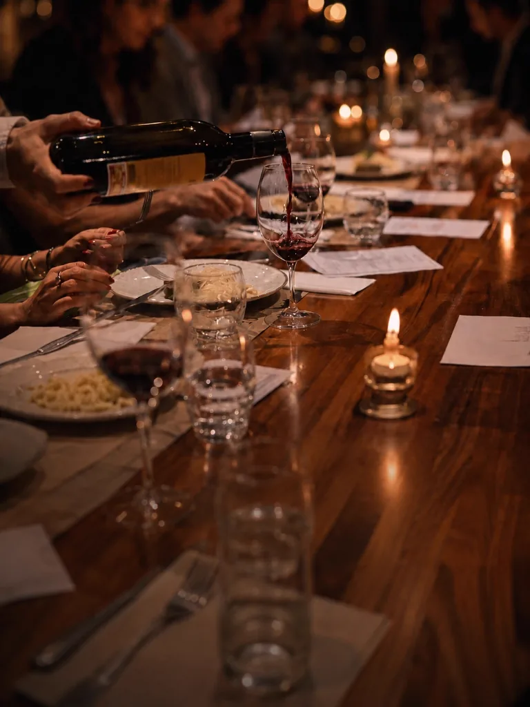
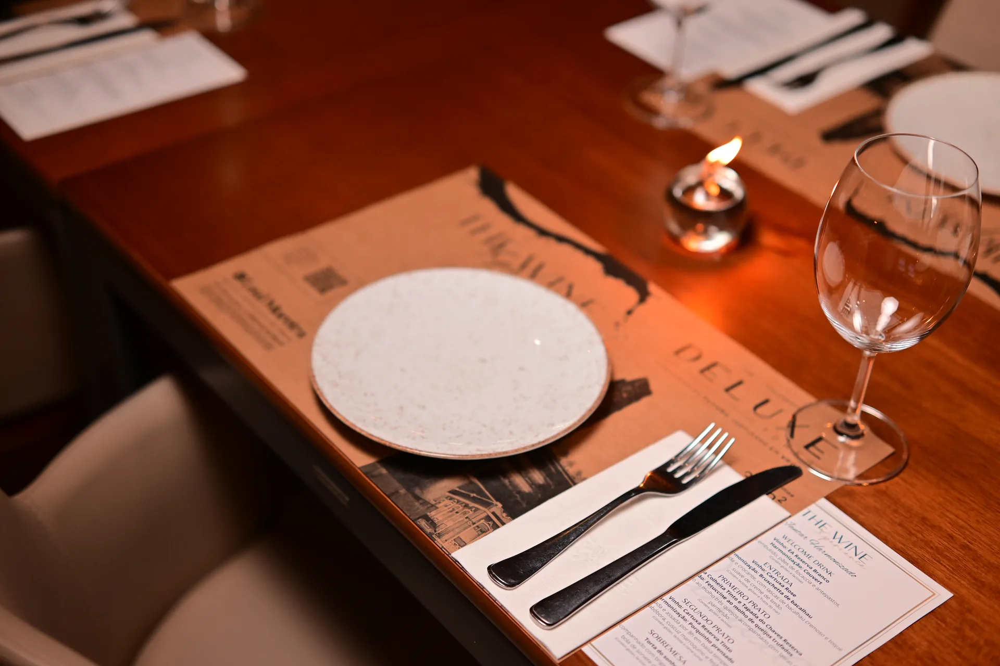
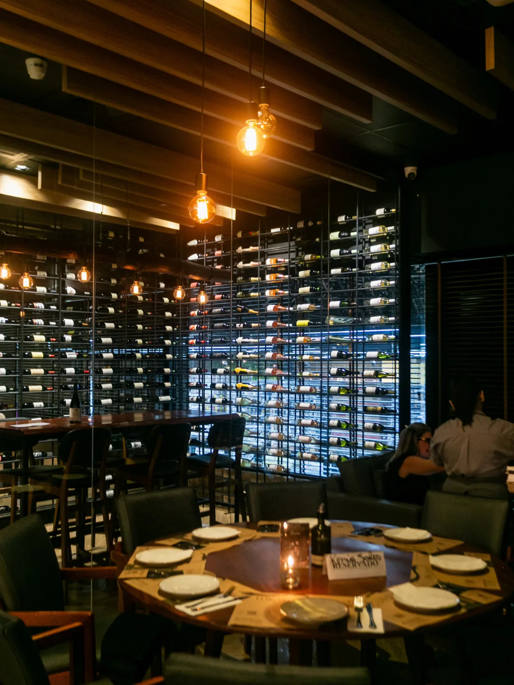
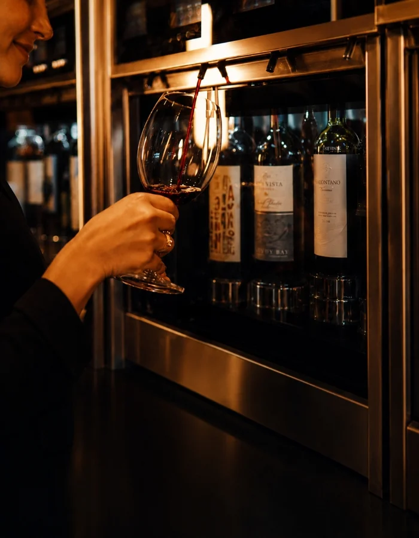

-
 Jantar Harmonizado
Uma vez ao mês
Menus exclusivos criados pelo chef, onde cada prato encontra seu vinho perfeito em uma experiência enogastronômica completa.
Saiba mais
Jantar Harmonizado
Uma vez ao mês
Menus exclusivos criados pelo chef, onde cada prato encontra seu vinho perfeito em uma experiência enogastronômica completa.
Saiba mais
-

Noite de Degustação Toda 1ª sexta-feira do mês Uma noite dedicada a descobrir novos rótulos, com curadoria especial e harmonizações que surpreendem o paladar. Saiba mais -

Wine Tasting Sob agendamento Degustações guiadas para pequenos grupos, com seleção de rótulos e aprendizado sensorial em ambiente exclusivo. Saiba mais -

Evento Corporativo Sob consulta Celebrações íntimas, encontros corporativos e ocasiões especiais com ambientação personalizada e serviço impecável. Saiba mais -

Máquinas de Vinho Escolha sua taça Escolha o rótulo, a origem e o estilo direto na máquina de vinhos — uma forma prática e elegante de descobrir novos sabores. Saiba mais